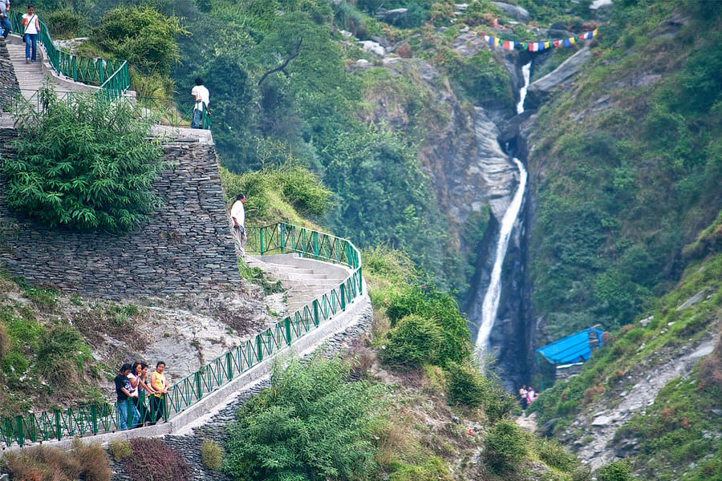
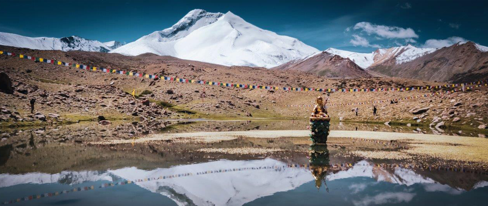

NATURE

Bhagsu
It is perhaps the most famous tourist spot in Dharamshala and attracts tourists who wish to revel in the glories of nature.

Markha
Set in the arid cold desert of Ladakh, Markha is a stunning river valley in Hemis National Park. The trek through Markha Valley is very picturesque and full of adventure.